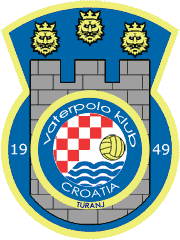

O klubuVaterpolo
klub Croatia Turanj osnovan je 1949. godine,a danas ima oko 30 članova. Klub
se kontinuirano natječe u regionalnim ligama za niže uzraste, a ovisno o uvjetima
i u seniorskoj konkurenciji. U sezoni 2004. očekuje se natjecanje u kategoriji
mlađih juniora, te u seniorskoj trećoj ligi. Zbog nedostatka zatvorenog bazena
klub djeluje samo tokom ljetnih mjeseci, kad se i održavaju natjecanja regionalnih
liga u Hrvatskoj. Povijest klubaNeposredno nakon drugog svjetskog rata turanjski mladići su otišli od kuće da bi izučili zanat ili završili školu, i to većinom u Zadar. Tamo su prvi put vidjeli igru koja se igrala s loptom plivajući u moru. Tu su igru donijeli u Turanj, igrajući je za vrijeme školskih praznika u mjesnoj luci. 1949. godine su na rivi nacrtali vrata i tada se u Turnju počeo igrati vaterpolo. Prvu pravu vaterpolsku loptu u Turanj donio je iz Biograda poznati hrvatski vaterpolski djelatnik Damir Čorić. Prva vaterpolska vrata donesena su iz Zadra i kupljena od PK Jedinstvo za 100 tisuća tadašnjih dinara, a prve kapice je turanjskim vaterpolistima napravila samouka krojačica Marija Santini. To je bila prva oprema s kojom je Croatia nastupila. U početku je malo tko stvarno znao igrati, pa se više igralo na snagu i pobjeđivao je onaj tko je bio fizički jači. U to vrijeme su se igrale utakmice s obližnjim klubovima iz sv. Filip i Jakova, Biograda, Zadra, Betine, Iža i Preka. Prvu generaciju igrača činili su: Anđelko i Milorad Bolić, Ive Deković (Muto), Sveto Jačan, Davor Mandić, Ivo Mišulić, Emil i Ante Pedisić, Fedor i Zvone Pirović, Kažimir Rota, zatim Božidar (Perin), Božidar (Božin), Davor, Drago i Pave Santini. Na čelu kluba su bili Ive Matulj i svećenik Frane Mandić. Prva natjecateljska faza je potrajala do 1965. godine, kada je vaterpolska djelatnost dijelom opala, ali igranje vaterpola u Turnju nikada nije potpuno prestalo. Croatia je natjecateljski reaktivirana ponovno početkom 70-ih godina. Nova uprava, većinom sa starim članovima kluba, ušla je u okupljanje sastava koji se natjecao skupa s Bjelovarom, Osijekom, Borovom, Hvarom, Šipanom, Rogoznicom, te splitskim Mornarom i Veteranom u tadašnjoj Republičkoj ligi. Nastupali su isključivo mladići iz Turnja i uvrstili se u donji dio Republičke lige. S vremenom je vaterpolo postao toliko omiljen da su se u Turnju organizirali i republički turniri za seniore, juniore i kadete. Veliki doprinos razvoju vaterpola 70-ih i 80-ih godina na području tadašnje Biogradske općine, pa tako i u Turnju dao je poznati stručnjak, profesor na zagrebačkom Kineziološkom fakultetu Zlatko Šimenc. Klub je egzistirao do sredine 80-ih godina, kada je zbog materijalnih teškoća djelatnost počela jenjavati. 1994. godine klub je ponovo oživljen, pri čemu je pomogao i profesionalni trener prof. Zoran Vrkić. On je radio sa izuzetno talentiranim igračima rođenim 1980. do 1982. godine koji su slijedećih nekoliko godina bili nadmoćni u kadetskoj i juniorskoj konkurenciji Biograda, Betine i Zadra. U sezoni 1997. je u seniorskoj kategoriji nastupio u trećoj ligi, a u sezonama 1998. i 1999. je uspješno nastupao u drugoj ligi. Od 1994. godine klub neprekinuto djeluje i natječe se u raznim kategorijama hrvatske vaterpolske lige. Povodom 50. obljetnice turanjskog vaterpola u Turnju je gostovala i reprezentacija Hrvatske, i na taj način se pridružila slavlju. Na čelu sa izbornikom Nevenom Kovačevićem hrvatski su reprezentativci odigrali međusobnu utakmicu, a u igri su sudjelovali i domaći igrači Croatie iz Turnja. |
||